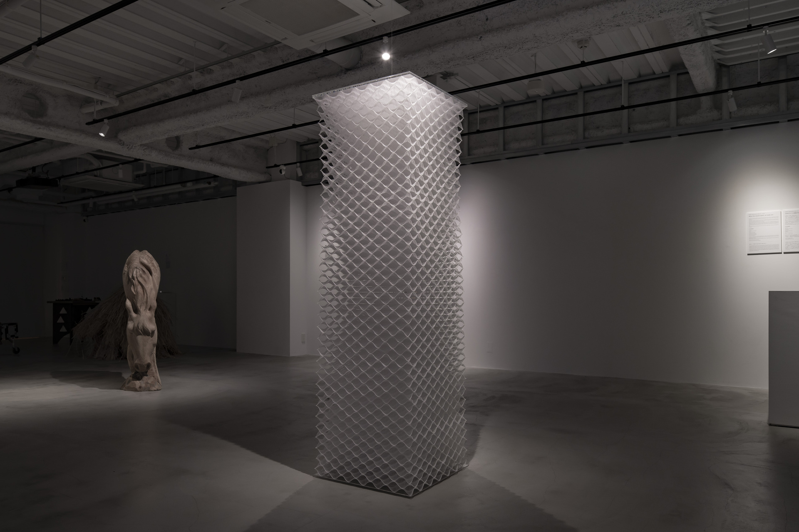
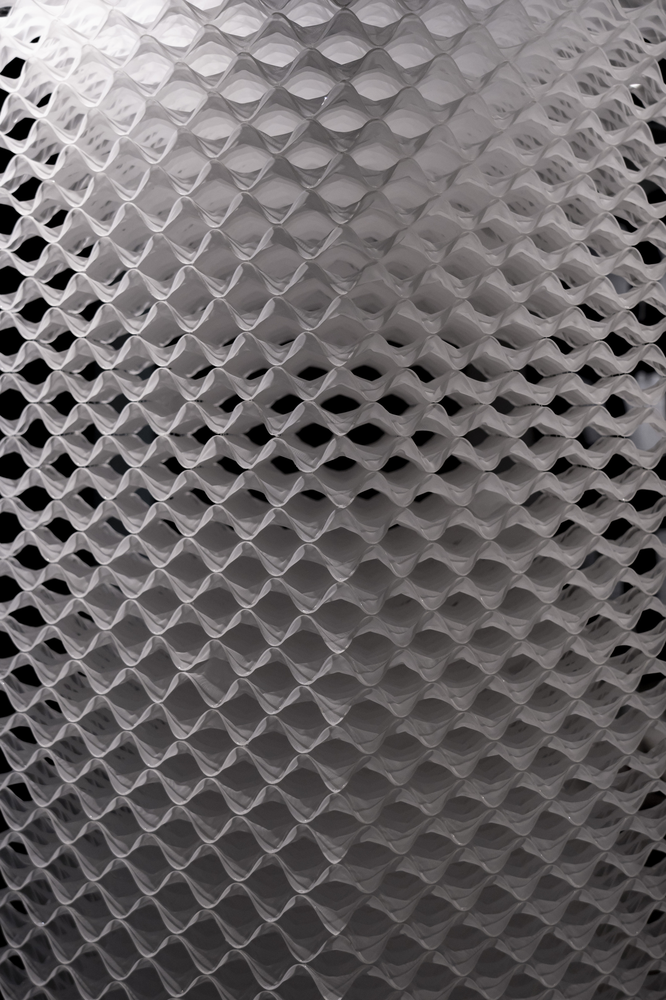
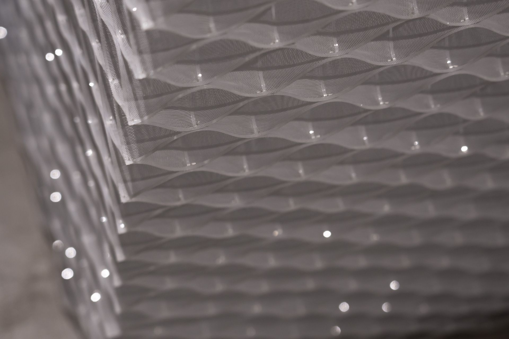

Active Textile - Pillar
2024
上條陽斗、田崎祥
（『口をひらくと空気がもれます。』展示キャプションより） 私は計算論的ものづくり、コンピューテーショナルファブリケーションに取り組んでいる。普段は「『一応』建築学専攻です。」と名乗ってしまう私も、異分野が交差するこの展示では建築的であることを意識せざるを得なかった。建築に立ち戻ったとき、場を生み出す基本要素としての柱を建てるのは自然な発想だった。そこで、波型のテキスタイルを柱と呼び得る寸法になるまで積層した。各層は伸縮性の布と正方形格子状のプラスチックが複合されて自律的に曲面を成している。力の釣り合いによって生まれる曲面を三次元的に反復した抽象的な構成の柱に、造形的な恣意が入り込む余地は少ない。この柱は地面から天を目指して立ち上がり、再び地面へと帰っていく。反復されるこの上下運動にはなにやら健気な生命らしさが宿っている。
keywords
Active Textile、キネティックアート
展示
KUMA experiment 2024-25 vol.4 『口をひらくと空気がもれます。』 2024, 東京
- 
- 
- 